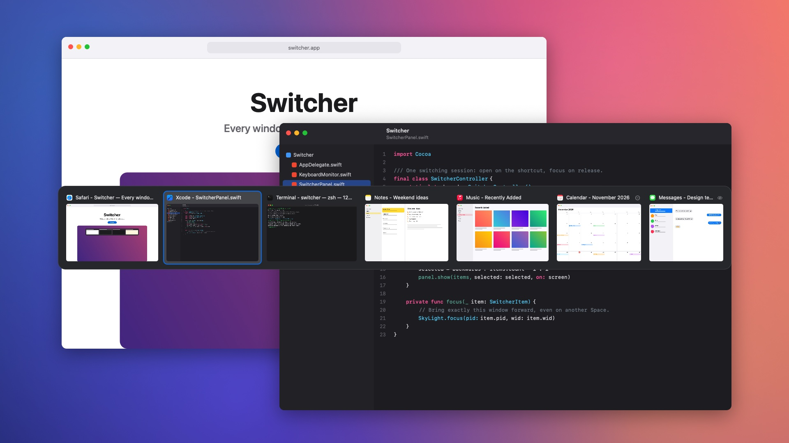
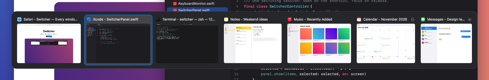
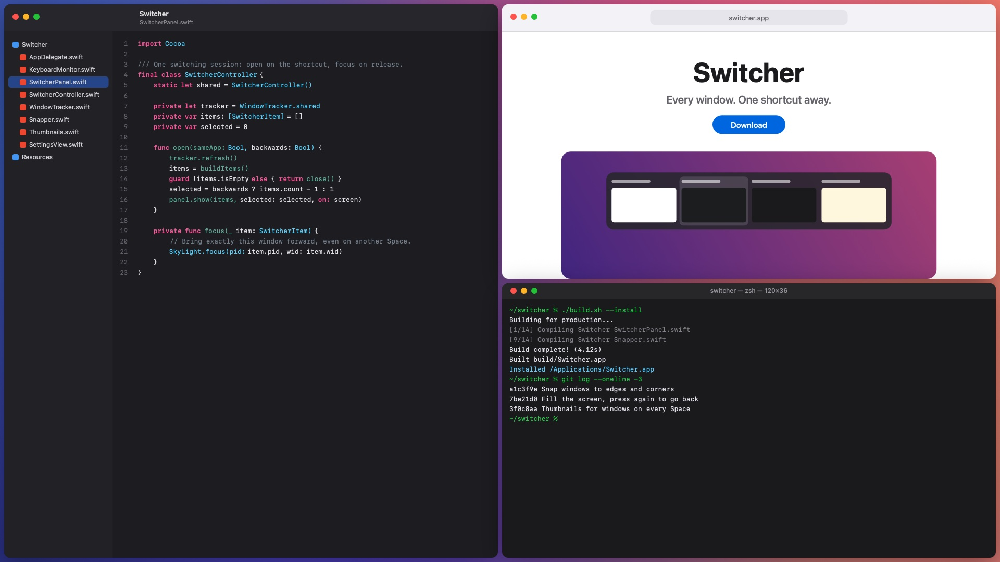
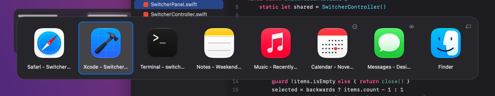
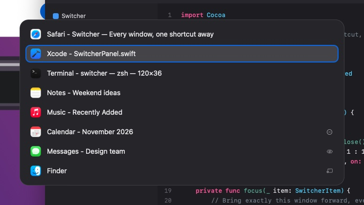
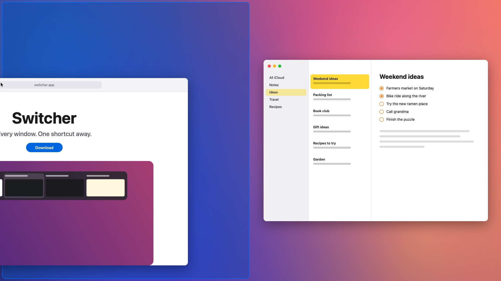
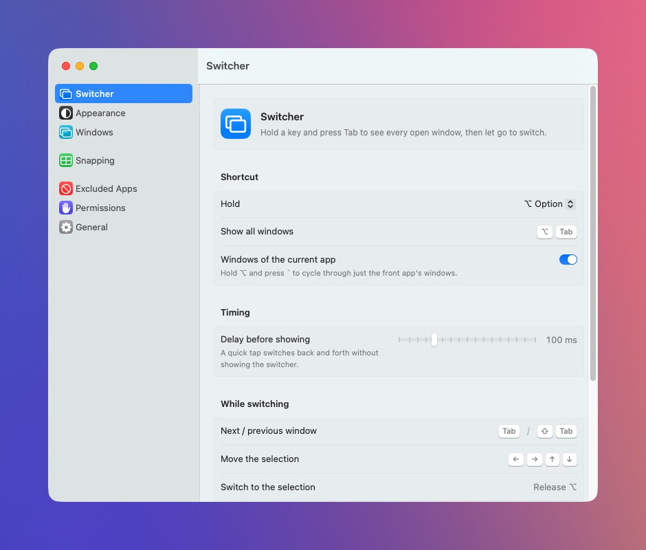
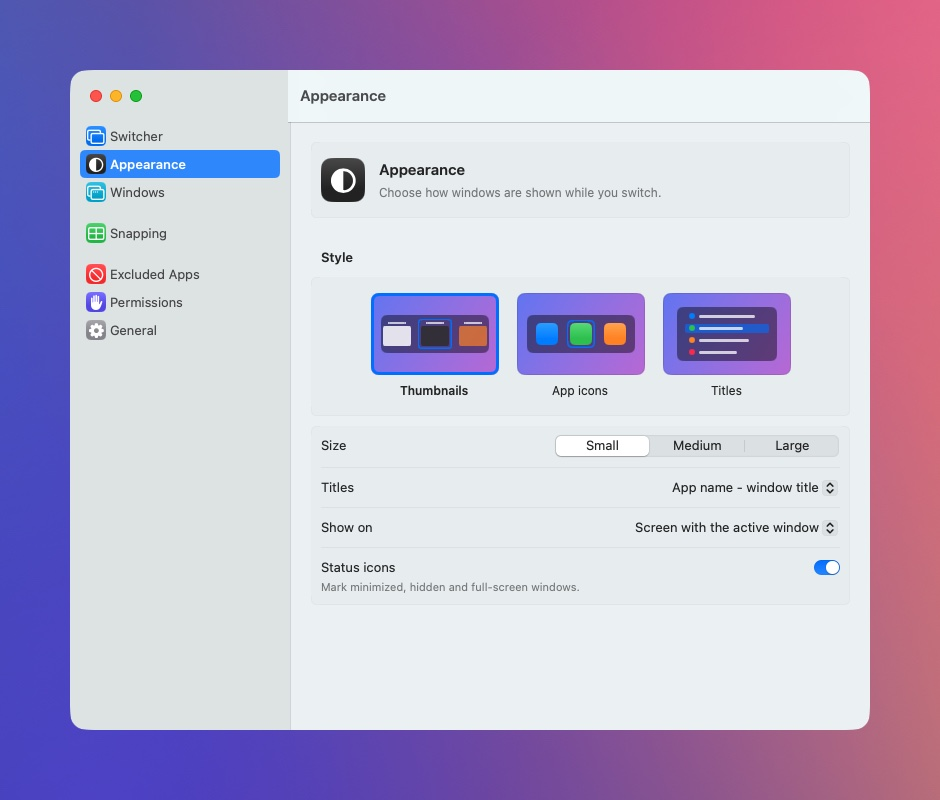
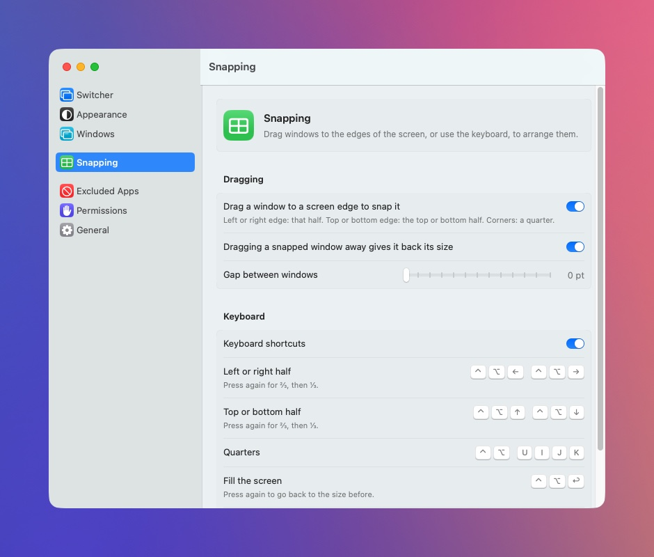
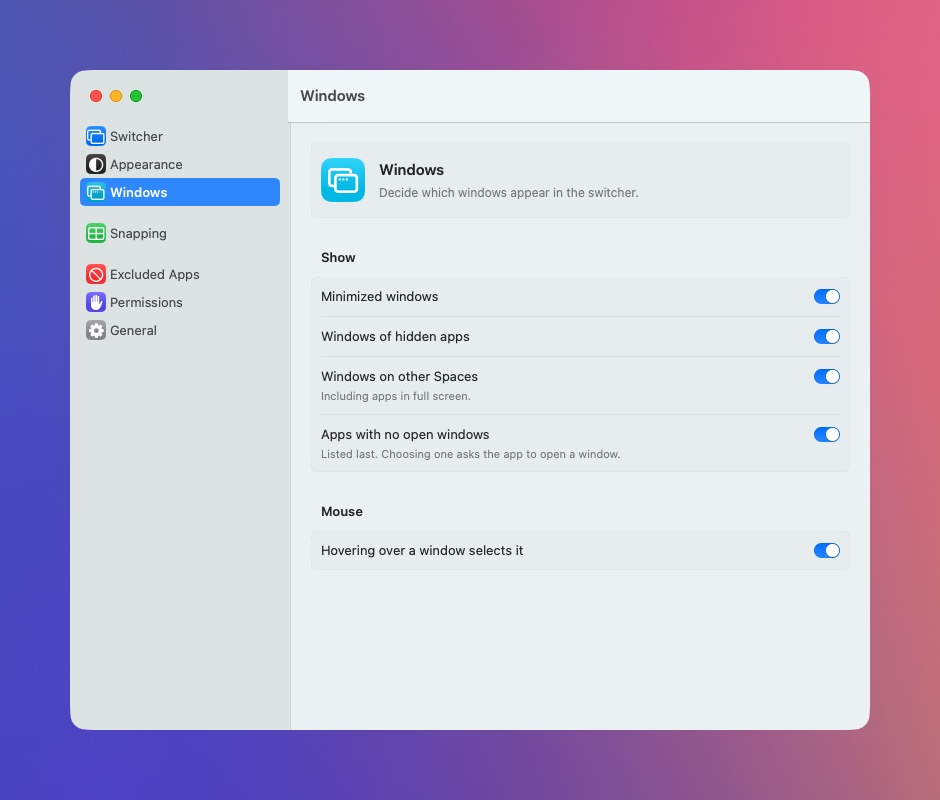

Free 30-day trial
Switcher
Every window. One shortcut away.
See every open window on your Mac with live previews, on every Space and even minimized. Then snap windows into place with a drag or a keystroke.
macOS 14 Sonoma or later · Apple silicon and Intel · 30 days free, then $2.95/month

Get the highlights.
All your windows. Not just your apps.
Three Safari windows are three choices, not one. Switcher lists every window in the order you last used it, so the one you want is usually a single Tab away.

Every Space. Even full screen.
Windows on other desktops and apps in full screen are right there with the rest. Pick one and you're taken straight to it.
Live previews.
Thumbnails show what's actually in each window, so similar windows never look alike.
Do more without leaving.
While the switcher is open, one key acts on the selected window.
Fill, then go back.
One shortcut makes a window fill the screen. Press it again and it returns to exactly where it was.
Snap to any edge.
Drag a window to the side of the screen for half, to a corner for a quarter, or arrange everything from the keyboard.

Native. Tiny. Fast.
Written in Swift with AppKit. No Electron, no web views. It opens in milliseconds and stays out of the way in your menu bar.
Try it free.
Every feature for 30 days, no credit card needed. Then $2.95 a month.
Private by design.
No analytics and no tracking. Nothing about your windows ever leaves your Mac; the only thing Switcher sends is a daily license check.
The switcher
Hold. Tab. There.
Hold ⌥ and press Tab. Every window appears, newest first. Keep tapping to move along, then let go.
Hold and tap.
Each Tab moves to the next window. Add Shift to go back, or use the arrow keys and the mouse.
Let go to switch.
The window comes forward, even from another Space, a minimized state or a hidden app.
Just this app.
Cycle through the windows of the app you're using, without the rest.
Prefer ⌘Tab or ⌃Tab? Pick the key you hold in Settings.
Your windows, your way.
Big previews, app icons, or a compact list. Three sizes each.


Live previews of every window, with the app and window title above each. Large app icons, like the classic app switcher, but one per window. A tidy list for when you have dozens of windows open.
Window snapping
Drag. Drop. Done.
Drag a window to an edge of the screen and a preview shows where it will land. Let go and it snaps into place. Drag it away and it gets its old size back.

Or never touch the mouse.
- ⌃⌥←→Left or right half. Again for ⅔, then ⅓.
- ⌃⌥↑↓Top or bottom half.
- ⌃⌥UIJKThe four quarters.
- ⌃⌥↩Fill the screen, and back.
- ⌃⌥CCenter.
- ⌃⌥⌫Back to where it was.
Settings that feel at home.
Laid out like System Settings, with every option where you'd expect it. Choose the key you hold, the style and size, which windows to show, whether each Space stays separate, apps to leave out, and how snapping behaves.




Two permissions. Nothing else.
macOS asks you to allow these the first time Switcher opens.
Accessibility
Required. Lets Switcher see your windows, catch its keyboard shortcuts and move windows when you snap them.
Screen Recording
For the live previews only. Without it, Switcher shows app icons instead. Nothing is ever saved or sent.
No tracking
No analytics, no ads. Switcher only checks your license with our payment provider, about once a day, and keeps working offline.
Pricing
One plan. Everything included.
Try every feature free for 30 days. No credit card needed.
Switcher
after your 30-day free trial
- Window switcher with live previews
- Every Space, full-screen, minimized and hidden windows
- Snapping by dragging and from the keyboard
- Keep each Space separate
- All updates while you're subscribed
- Use it on up to 3 of your Macs
Cancel anytime. Prices in US dollars; sales tax or VAT may be added at checkout.
Get Switcher.
Free for 30 days. For macOS 14 Sonoma and later, on Apple silicon and Intel.
- Unzip and move Switcher to Applications.
- Open it.
Switcher isn't notarized by Apple yet, so macOS stops it the first time. Go to System Settings → Privacy & Security, scroll down and click Open Anyway.
- Allow Accessibility and Screen Recording when asked.
Relaunch Switcher after allowing Screen Recording so previews appear.
- Hold ⌥ and press Tab.
Settings live behind the menu bar icon. Switcher starts at login; you can turn that off in Settings → General.
- Subscribe when you're ready.
Your license key arrives by email. Paste it in Settings → License and click Activate.
Questions? Answers.
How much does Switcher cost?
Every feature is free for 30 days, no credit card needed. After that it's $2.95 a month, and you can cancel anytime.
What happens when my trial ends?
Switching and snapping pause and Switcher asks you to subscribe. Your settings are kept, and everything works again the moment you activate your license.
How do I activate my subscription?
After checkout you get a license key by email. Click Switcher's menu bar icon, open Settings → License, paste the key and click Activate. One subscription covers up to 3 of your Macs.
How do I cancel?
Use the link in your receipt email, or Settings → License → Manage Subscription. Switcher keeps working until the end of the period you've paid for.
Why does macOS say it can't verify the developer?
The app isn't notarized by Apple yet. Open it once from System Settings → Privacy & Security → Open Anyway. You only need to do this once.
Dragging to an edge also triggers macOS's own tiling.
Recent versions of macOS tile windows dragged to the screen edges too. In System Settings → Desktop & Dock, turn off “Drag windows to screen edges to tile” and “Drag windows to menu bar to fill screen”. Switcher's Settings warns you while they're on.
Can it replace ⌘Tab?
Yes. Set the hold key to ⌘ in Settings → Switcher. The system's own ⌘Tab switcher is turned off while Switcher runs and comes back when you quit it.
Does it show windows on other Spaces?
Yes, along with full-screen apps, minimized windows and windows of hidden apps. Each can be turned off in Settings → Windows.
Can each Space work on its own?
Yes. Turn on “Keep each Space separate” in Settings → Windows. The switcher then shows only the windows on the Space you're in, and opening an app whose windows are all on other Spaces gives it a new window right where you are, instead of taking you away.
How do I leave an app out?
Add it in Settings → Excluded Apps and its windows won't appear in the switcher.